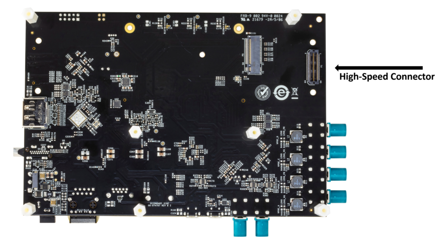
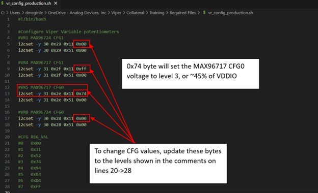
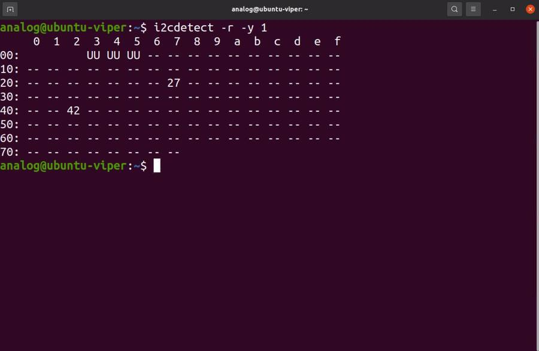
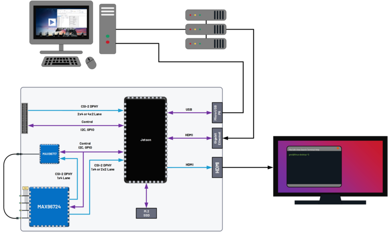
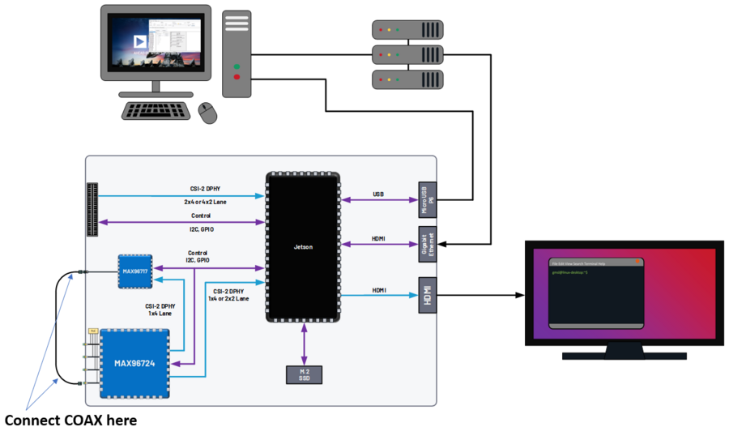
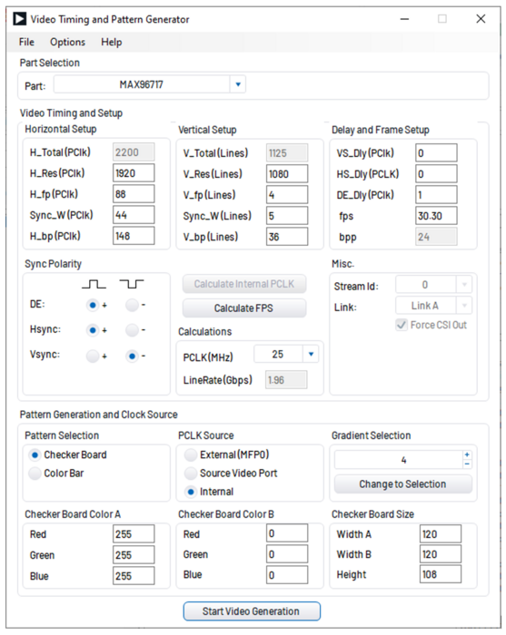
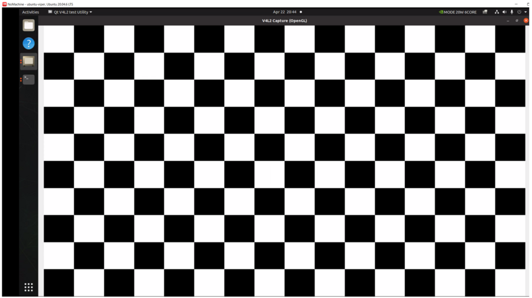
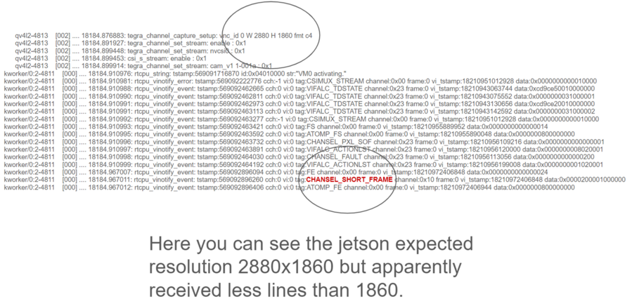
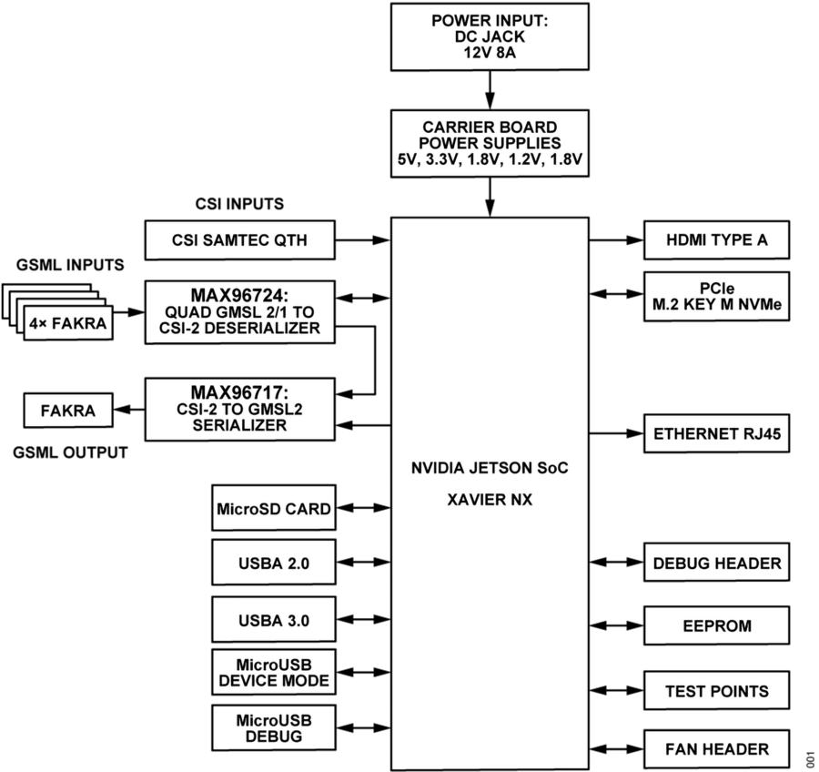

Software Guide
Note
- The default username and password for the device are as follows:
Username: analog
Password: analog
Introduction
Note
The AD-GMSL522-SL Development Board or simply “GMSL Dev Board” is just another name for the AD-GMSL522-SL board. Note that these three names are used interchangeably throughout this Getting Started Guide.
This page will go over high-level features and functions of the AD-GMSL522-SL Board. The following, specifically, will be covered:
Required Hardware
Recommended Hardware
AD-GMSL522-SL Board I/O
First time board bring-up
Required software download/install
Recommended tools/software
Pre-Requisites
No prior training is required to go through the content of this document. A basic understanding of the GMSL technology, however, is recommended. The following sub-sections detail the required and recommended hardware/software to get the AD-GMSL522-SL board up and running properly.
Required Hardware
The following hardware is required to enable critical features of the AD-GMSL522-SL Board. The AD-GMSL522-SL board and vetted hardware is shown below. The customer will need to procure their own Jetson Module and corresponding heatsink.
AD-GMSL522-SL Board: |
|
(If not using SoM-included version) Compatible Jetson SOM: |
|
(If not using SoM-included version) Heat Sink for SOM: |
https://www.mouser.com/ProductDetail/Auvidea/70797?qs=vmHwEFxEFR%2FrptlH5I2KWQ%3D%3D |
12V 8A Power Supply: |
https://www.amazon.com/TOBWOLF-100V-240V-Transformer-Switching-Converter/dp/B0B1DGBVKB?th=1 |
Recommended Hardware
Ethernet Cable or USB <-> Wi-Fi Adapter
MicroUSB Cable
USB Mouse and eyboard
Required Software and Downloads
Programming potentiometers for configuration pins: WIP
Recommended Tools and Software
The following software are tools that are commonly referenced and used during different examples, demos and tutorials for AD-GMSL522-SL. To be able to easily follow along with these lessons, it is recommended to download and install these tools.
NoMachine (there is a following section below for more information)
AD-GMSL522-SL Hardware Overview
In this section, the inputs, outputs, and other general hardware features of the AD-GMSL522-SL board will be discussed.
GMSL Camera Inputs
One way to send video data to the AD-GMSL522-SL board is through GMSL-2 compatible camera modules. They can be connected to the onboard FAKRA connectors, INA+, INB+, INC+, and IND+. These FAKRA connectors are connected directly to the onboard MAX96724. In addition to being connected to the deserializer these connectors are also shorted to +12V. This means that the camera modules can be powered from the AD-GMSL522-SL board and do not need to be powered internally. This is important to note because it means that another voltage source should not be connected to these FAKRA connectors, otherwise damage could be caused to either the AD-GMSL522-SL board, or the user’s module.
{kind=link}
The MAX96724 has its Port B CSI-2 DPHY bus connected to the input of the Jetson SoM. The second way that a user can send video to the Jetson SoM is through the SAMTEC connector on the bottom of the board. Any GMSL2 CSI-2 DPHY deserializer Evkit, or user-designed, board can be connected to this port. This SAMTEC connector has 2x 1x4 CSI-2 DPHY ports connected directly to the Jetson SoM inputs. Additionally, this connector can supply power, an I2C connection to the Jetson, and GPIO connections to the Jetson to control things like frame sync, or power down signals, for instance.
CSI Input to Jetson SoM
Depending on whether you are using camera modules through the onboard MAX96724, or an Evkit connected to the onboard CSI SAMTEC connector, or both, you will need to know which CSI input port to the Jetson is connected. The below graphic shows which CSI Ports on the Jetson go to which video inputs to the AD-GMSL522-SL board.
For more specifics about CSI connections, refer to the hardware overview document: hardware
I2C Busses
The Jetson has many different possible I2C busses and therefore it is important to know which I2C bus connects to where on AD-GMSL522-SL board. For more specifics about the I2C busses on AD-GMSL522-SL board, refer to the hardware overview document: hardware
First Time Setup / Getting Started
Assembling the SoM to the Board
First, attach the heatsink to the SOM.
Next, plug in the SOM to the AD-GMSL522-SL board at an angle, and once the SOM is seated into the connector, push the SOM down until it is parallel with the carrier board, at which point the locks should engage to keep the SOM at a certain position.
Install standoffs to keep SOM safely in a firm and locked position.
Flashing the AD-GMSL522-SL Board
Important
In this next section, if you see an error during flashing, indicating ‘strings’ is not installed, run the following commands on your host PC to install the required libraries:
sudo apt update
sudo apt install binutils
First, your Linux PC needs to be configured to be able to flash Jetson devices. To do this, follow NVIDIA’s documentation to install and run their “SDK Manager” program: https://docs.nvidia.com/sdk-manager/download-run-sdkm/index.html Now, let’s begin with flashing the AD-GMSL522-SL image onto the NVIDIA Xavier SOM. Follow the next steps to do so:
With the power off, place jumpers to short pins 3-4 on the P11 header to force USB Recovery Mode for the Jetson Xavier. See below picture for a diagram showing jumpers to be shorted. Pins 9-10 should always be shorted.
Plug in the power and programming cables to the AD-GMSL522-SL board by following the below picture.
Untar, or extract, the image that was downloaded in the “Required Software” section of this document
sudo tar -xvf <filename>
Change working directory to the new directory created during the untar process.
- On the host pc (this must be done with a Linux OS), run the following command to flash the Jetson SoM.
sudo ./flash.sh gmsl522-p3668-0001-qspi-emmc mmcblk0p1
- Flashing will take some time. When it completes, you should see the following message at the end of the terminal:
“The target t186ref has been flashed properly.”
- Reset the board to boot from internal eMMC via:
Power down the board, and remove the FORCE_REC jumpered pin and remove the USB connection
Power cycle the board. Note the fan will run and stop depending on the load level
Power cycle the AD-GMSL522-SL board.
Warning
It is very important at this point not to run automatic installing commands like apt-get update because the current viper file system was created with an older version of JetPack – 5.3.1.
Updating the Digital Potentiometers on AD-GMSL522-SL
Note
The AD-GMSL522-SL boards are sent to the user with the digital potentiometers already programmed and good for almost all use-cases. By default, the MAX96724 and MAX96717 are configured in the following way:
6 Gbps Forward Link Speed (Both MAX96724 and MAX96717)
I2C communication method (instead of UART) (Both MAX96724 and MAX96717)
8-Bit I2C Address 0x4E (MAX96724)
8-bit I2C Address 0x84 (MAX96717)
The digital potentiometers on the AD-GMSL522-SL board control the voltage that is sent to the configuration pins of the GMSL devices, and therefore, control which mode the GMSL devices are booted up in. Learn more about the configuration pins in the MAX96724 or the MAX96717 datasheets. To update or change these voltages run the following script. This should be run once when the board is first received, and again any time a change to the digital potentiometer output voltage is required. The potentiometers will save the configuration in their EEPROM, so it is not required to run this script after every reboot.
Change directory where the vr_config.sh script is located.
On the AD-GMSL522-SL board, execute the vr_config.sh script to update the potentiometers:
sudo ./vr_config.sh
How to Change Configuration Pin Voltages for Onboard SERDES
Below is an example of the digital potentiometer circuit on the AD-GMSL522-SL board. As you can see, the digital pot sets the point along the internal where the voltage is measured. Because the internal resistor of the potentiometer is 200k, the pullup and pulldown resistors on the H and L pins have almost no effect and can therefore be ignored. With this in mind, it can be stated that the voltage see on the configuration pins of the SERDES is almost exactly the voltage set by the programming of the potentiometer between 0 and 255. i.e., the voltage on the configuration pin can be summarized by this equation: CFG(V)=VDDIO*ProgrammedValue Where ProgrammedValue is a hex value between 0 and 255 and is set per device in the vr_config file. A snippet of the configuration file is shown below. Additionally, there are comments in the configuration file to give example hex values to set for different configuration profiles at the bottom of the file.
Updating/Changing Device Tree Blobs (boot modes)
Multiple different device tree blobs (dtbs) are available for AD-GMSL522-SL user’s convenience. They each have a separate use. For example, one dtb will allow any™ sensor resolution to be streamed to AD-GMSL522-SL but the user will need to program the SERDES and sensor themselves. Another dtb, however, will only allow a certain sensor to be streamed and viewed with the Jetson, but the sensor and SERDES programming will be executed at power up and is not configurable. To change the dtb to boot from, follow these steps:
- Using a text editor on the AD-GMSL522-SL board, open the /boot/extlinux/extlinux.conf file as root:
sudo vim /boot/extlinux/extlinux.conf
Find the line that specifies the dtb to boot from. This line “FDT /boot/dtb/tegra194-p3668-0001-viper-reva-gmsl-1.dtb” where the “-1” could be any value depending on what you are using now.
Change the “-X”, where the “X” is a value dependent on what you are using now, to whichever version you would like. The currently supported dtbs are shown below:
For more information on how to create your own device trees, or modify the AD-GMSL522-SL Kernel for your own custom use case, see this webpage: nvidia
Verify Proper Flashing/Setup
Once the Jetson has been flashed and the configuration pins of the SERDES have been properly updated, you should be able to probe the i2c bus of the AD-GMSL522-SL board and see the SERDES there. Open a terminal and run the following command:
i2cdetect -y -r 1 (reads all devices on the I2C Bus #1. If a device is detected, its 7-bit address is noted)
If the board and SERDES are properly configured, you should see the following:
{kind=link}
General Tips for Using the AD-GMSL522-SL Board
If ‘looping back’ the onboard MAX96717 to the onboard MAX96724, it is best practice to disable the MAX96717 local control channel. This way, I2C communication will not be duplicated and only sent to the MAX96717 via the GMSL link. To do this, set register bit 5 in register 0x0001 HIGH. For example, if operating the max96717 in 6G mode, set register 0x0001 == 0x28.
The MAX96724 has two MIPI ports. One of these ports is connected to the Jetson while the other port is connected to the MAX96717. Specifically, MIPI Port B is connected to the Jetson, while MIPI Port A is connected to the MAX96717. This will be important when specifying in the GUI tools where to send the video data.
There are two micro-USB inputs to the Jetson. One is used for debug information from the Jetson while the other is used for GPIO. Unless you are looking for kernel and boot messages from the Jetson, P6 is the correct connector to use. P6 should be used if you are trying to connect the GMSL GUI to the Jetson, for example.
Streaming Video Data via “Generic Sensor Driver”
The “generic sensor driver” device tree of the AD-GMSL522-SL board allows a user to stream any resolution camera and any sort of MIPI CSI-2 datatype, within the capabilities of the jetson. There is one limitation to this tool, and it is that no embedded data may be used. Future device trees will allow different numbers of embedded data at the TOP of the image frame but are currently unavailable. The Jetson, as of writing this, does not currently support any embedded data at the BOTTOM of the image frame. To utilize this tool, the SERDES and the accompanying image sensors must be programmed by the user. This can be done in a number of ways: The GMSL GUI connected directly to an evkit, the GMSL GUI connected through the AD-GMSL522-SL board, the “GMSL User Space Drivers”, or any other user-defined way. In general, the sensor can be streamed by following the below steps:
- Program the SERDES
One way to do this is to open the GMSL server on AD-GMSL522-SL board, and run the GUI via a user’s PC
Using the “CSI Configuration Tool” in the GMSL GUI, generate a SERDES script
Program the SERDES using the “Load (.CPP) File” tool
- Program the Image Sensor
This step will require the user to have a set of register writes to program the sensor and cause it to stream video data. There are few ways to get this data but normally it can be acquired from the image sensor vendor.
Program the Image Sensor. If the register writes are configured in the same way that that the SERDES register writes are, i.e., in a .cpp format, the GMSL GUI can be used to program the sensor, again, using the “Load (.CPP) File” tool.
- Configure the v4l2 video pipeline
- Below is one example of this command. Note where the resolution is stated, and where the datatype is stated. To find supported image formats, or datatypes, of the Jetson, another command can be executed:
Command to configure pipeline: v4l2-ctl –device /dev/video2 –set-fmt-video=width=1920,height=1280,pixelformat=BG12
Command to find supported pixel formats: v4l2-ctl –list-formats
- Stream
- Once the pipeline is properly configured to the incoming data, the video viewer, qv4l2 should be called. However, which CSI input to the Jetson being used, needs to be specified. See the following command:
qv4l2 -d /dev/video2
- The following video devices should be used depending on which MIPI Input is used:
QTH SAMTEC MIPI Port A: /dev/video0
QTH SAMTEC MIPI Port B: /dev/video1
MAX96724 MIPI Port B: /dev/video2
Click the green “Play” button to stream the video (see image below)
Make sure not to change any of the parameters in the window because it will override what was done in the previous step.
Loopback Testing and Exercises
For the following two sub sections, connect your AD-GMSL522-SL board in the following way. Some of these components may not be necessary depending on how you have your system setup. For instance, if you are using NoMachine, an external display is not necessary. An ethernet is not explicitly needed for this exercise unless a connection to the internet, or an intranet for use of NoMachine or another VNC. It is important to have a coax cable connected between the MAX96717 output and the MAX96724 “A” input.
Looping back the On-Board MAX96717 to the On-Board MAX96724 (streaming a checkerboard pattern from the MAX96717)
In this exercise, the functionality of both the MAX96717 and the MAX96724 on the AD-GMSL522-SL board will be exercised. The MAX96717 will uses its internal pattern generator functionality to build a checkboard pattern and then send that pattern to the MAX96724 which will pass that pattern along to the Jetson to be viewed. This exercise will utilize the following:
- A Windows PC to run the GMSL GUI
Pattern Generator Tool
CSI Programming Tool
qv4l2 on the Jetson
Device Tree “-3” to allow generic input video stream resolutions, datatypes, and frame rates. Make sure to update the extconf.txt file. If you do not know how to do this, refer back to this section.
Follow these steps to stream the pattern generator tool on the AD-GMSL522-SL board:
To start, set up your hardware like in the diagram below. Depending on whether or not you are using NoMachine or some other remote-viewing software, your setup may differ. The critical part is that there is a COAX cable connected between the MAX96717 output, and the MAX96724 input “A”.
- On the AD-GMSL522-SL board, start the GMSL server:
./gmsl-uart-server –i2c=/dev/i2c-1 –serial=/dev/ttyGS0
On your Windows PC, start the GUI and verify you can detect the GMSL SERDES. - Use the CSI Programming Tool to build a script that has the following parameters (recall that the MAX96724 is using I2C address 0x4E, and the MAX96717 is using I2C address 0x84):
‘RGB888 Datatype with Virtual Channel 0’ input to the serializer (technically, the RGB888 will be generated in the serializer, but we need this step to get to the next step)
‘RGB888 Datatype with Virtual Channel 0’ output from the deserializer on MIPI Port B.
Generate the script and save it somewhere you can find it.
You can verify your by checking it against the script in the proper appendix.
Use that script to program the SERDES using the Load (.CPP) function the GMSL GUI.
Now, open the “Video Timing and Pattern Generator” Tool in the GUI
Set the parameters of the tool to match what is shown below:
Click the “Start Video Generation” button at the bottom of the window to start the generator.
If everything has been done correctly up to this point, MIPI data should be leaving the MAX96724 from MIPI Port B and going to the Jetson. This can be verified by reading register 0x08D1 in the MAX96724. If the register value is toggling, you know data is outputting the deserializer.
- Configure the jetson to expect an input resolution of 1920x1080 and RAW12 pixel format
v4l2-ctl –device /dev/video2 –set-fmt-video=width=1920,height=1080,pixelformat=AR24
- Start the video streaming application, qv4l2, from video device 2
qv4l2 -d /dev/video2
Click the green play button to begin streaming the checkerboard.
At this point, a black and white checkboard should be shown on the display. Because the pattern generator builds a static image, it will look like the frame is frozen. Your screen should look similar to this:
{kind=link}
Debugging CSI Input to AD-GMSL522-SL Board
If the SERDES and Sensor are properly programmed, and CSI data is going to the Jetson, you can use the following technique to attempt to debug. To see the low-level details of the MIPI interface to the Jetson, we must enable tracing. Follow these steps to see the trace details:
Enable tracing. This step must be done as a ‘super user’. Even creating the file must be done as a super user.
- Become a super user
sudo su
- Create a shell script with the following contents
E.g. (vim enable_tracing.sh)
#! /bin/sh
sudo echo 1 > /sys/kernel/debug/tracing/tracing_on sudo echo 30720 >
/sys/kernel/debug/tracing/buffer_size_kb sudo echo 1 >
/sys/kernel/debug/tracing/events/tegra_rtcpu/enable sudo echo 1 >
/sys/kernel/debug/tracing/events/freertos/enable sudo echo 2 >
/sys/kernel/debug/camrtc/log-level sudo echo 1 >
/sys/kernel/debug/tracing/events/camera_common/enable sudo echo >
/sys/kernel/debug/tracing/trace
sudo echo file vi2_fops.c +p > /sys/kernel/debug/dynamic_debug/control sudo echo
file csi2_fops.c +p > /sys/kernel/debug/dynamic_debug/control
sudo echo file vi4_fops.c +p > /sys/kernel/debug/dynamic_debug/control sudo echo
file csi.c +p > /sys/kernel/debug/dynamic_debug/control sudo echo file
csi4_fops.c +p > /sys/kernel/debug/dynamic_debug/control sudo echo file nvcsi.c
+p > /sys/kernel/debug/dynamic_debug/control
sudo cat /sys/kernel/debug/tracing/trace
- Make this file executable
chmod +x <file name> (E.g. chmod +x enable_tracing.sh)
- Execute the script
enable_tracing.sh
Now enable streaming using qv4l2, for instance.
Let the stream run for a several seconds to collect enough data
Save the trace logs
cat /sys/kernel/debug/tracing/trace > trace_output.txt
View the logs
The error codes can be found in the logs. Here is one example:
Additionally, the Orin Technical Reference Manual (TRM) can be found on NVIDIA’s collateral site to get more information on the errors. This is an excerpt from the TRM:

More info on this technique and what the trace is saying can be found here: `https://elinux.org/Jetson/l4t/Camera_BringUp`_
Other Helpful Software and Improvements
Viewing AD-GMSL522-SL Remotely Using NoMachine
NoMachine allows users to connect to any computer with very little latency and high resolution. This is recommended to be used because of the common use case of viewing video data requires low latency and high-resolution video. Compared to other remote desktop viewers, NoMachine has much higher quality video streaming. To install NoMachine on your AD-GMSL522-SL Board and Host PC, follow this tutorial from Jetsonhacks: `https://jetsonhacks.com/2023/12/03/nomachine-jetson-remote-desktop/`_ Or view their own documentation at: `https://www.nomachine.com/`_
Booting From NVMe
The default memory module on the Jetson Xavier is only 16GB large. Given the fact that the AD-GMSL522-SL GMSL kernel is already ~14GB large, there is not much space left to do anything useful. One way to remedy this situation is to buy and use an NVMe. NVMe is typically much faster than the internal eMMC of the Xavier NX so the upgrade is not just space, but speed as well. To get this upgrade, one can buy the vetted NVMe module in the “Recommended Hardware” section of this document, and then follow the tutorial from JetsonHacks on how to boot from NVMe.
Booting From SD Card
Boot via SD card will be done the same way as an NVMe. In the case of the Jetson Xavier NX, the SOM will always boot from eMMC, initially, but if properly configured, can then hand over the boot process to another memory medium. Therefore, it will always be required that a working image is flashed to the eMMC of the Jetson, and then, that, or a new filesystem, is placed onto the SD card.
Restarting the Fan Service
There is a known bug on the NVIDIA forums stating that sometimes, the fan will run at full speed constantly. This appeared in Jetpack Version 5.1 it is believed. To fix this issue, run the following command:
- ::
sudo systemctl restart nvfancontrol.service
AD-GMSL522-SL Hardware Specifics
Important
There is a separate document that goes into more details on these following hardware topics. See: AD-GMSL522-SL Hardware Guide
Block Diagram
{kind=link}
I2C
There are multiple ways to interface with the GMSL devices on AD-GMSL522-SL such as the Linux I2CSET and I2CGET functions as well as smbus, though, regardless of the method, one should pay attention to which I2C bus of the Jetson is connected to which GMSL parts or connectors. See below for some example commands and what bus goes where.
I2C Bus 1: MAX96724, MAX96717
I2C Bus 2: CSI SAMTEC Connector
Some example commands to test out I2C are below:
i2cdetect -y -r 1 (reads all devices on the I2C Bus #1. If a device is detected, its 7-bit address is noted)
MIPI / QTH SAMTEC CONNECTOR
A QTH-030-01-L-D-A high speed connector is present on the bottom of the board. GMSL to CSI deserializer evaluation kits can be connected here. In the default configuration, if an evaluation kit is mounted on the carrier board, power to it will not be supplied by the carrier board. R136, R153, R152 can be soldered on the carrier to connect the Evkit to the power supplies of the AD-GMSL522-SL carrier board.
Important
Please check the board and don’t plug the power supply of the evkit connected to P1 if R152 is installed</note> 12 MIPI CSI lanes (CSI0-CSI3) of the XavierNX are routed to this connector, supporting either 4x2, 2x4 CSI-2 DPHY v1.2 configurations.
Appendix (proper script for pattern generator viewing exercise)
# Name: dmcginle
# Date: 4/22/2024
# Version: 6.6.5
#
# I2C Address(0x), Register Address(0x), Register Value(0x), Read Modify Write(0x)
#
# THIS DATA FILE, AND ALL INFORMATION CONTAINED THEREIN,
# IS PROVIDED "AS IS", WITHOUT WARRANTY OF ANY KIND,
# EXPRESS OR IMPLIED, INCLUDING BUT NOT LIMITED TO
# THE WARRANTIES OF MERCHANTABILITY, FITNESS FOR A PARTICULAR
# PURPOSE AND NONINFRINGEMENT.
# IN NO EVENT SHALL ANALOG DEVICES, INC. BE LIABLE FOR ANY CLAIM,
# DAMAGES OR OTHER LIABILITY, WHETHER IN AN ACTION OF CONTRACT,
# TORT OR OTHERWISE, ARISING FROM, OUT OF OR IN CONNECTION WITH THE DATA FILE,
# THE INFORMATION CONTAINED THEREIN, OR ITS USE FOR ANY PURPOSE.
# BEFORE USING THIS DATA FILE IN ANY APPLICATION FOR PRODUCTION OR DEPLOYMENT,
# THE CUSTOMER IS SOLELY RESPONSIBLE FOR TESTING AND VERIFYING
# THE CONTENT OF THIS DATA FILE IN CONNECTION WITH THEIR PRODUCTS AND SYSTEM(S).
# ---------------------------------------------------------------------------------
#
# _____ _____
# /\ | __ \_ _|
# / \ | | | || |
# / /\ \ | | | || |
# / ____ \| |__| || |_
# /_/ \_\_____/_____|
#
# ---------------------------------------------------------------------------------
*/
/*
# This script is validated on:
# MAX96717
# MAX96724
# Please refer to the Errata sheet for each device.
# ---------------------------------------------------------------------------------
*/
//
// CSIConfigurationTool
//
// GMSL-A / Serializer: MAX96717 (Pixel Mode) / Mode: 1x4 / Device Address: 0x84 / Multiple-VC Case: Single VC / Pipe Sharing: Separate Pipes
// PipeZ:
// Input Stream: VC0 RGB888 PortB (D-PHY)
// Deserializer: MAX96724 / Mode: 2 (1x4) / Device Address: 0x4E
// Pipe0:
// GMSL-A Input Stream: VC0 RGB888 PortB - Output Stream: VC0 RGB888 PortB (D-PHY)
0x04,0x4E,0x04,0x0B,0x00, // BACKTOP : BACKTOP12 | CSI_OUT_EN (CSI_OUT_EN): CSI output disabled
// Link Initialization for Deserializer
0x04,0x4E,0x00,0x06,0xF1, // DEV : REG6 | (Default) LINK_EN_A (LINK_EN_A): Enabled | LINK_EN_B (LINK_EN_B): Disabled | LINK_EN_C (LINK_EN_C): Disabled | LINK_EN_D (LINK_EN_D): Disabled
0x04,0x4E,0x00,0x03,0xFE, // DEV : REG3 | (Default) DIS_REM_CC_A (GMSL Link A I2C Port 0): Enabled | DIS_REM_CC_B (GMSL Link B I2C Port 0): Disabled | DIS_REM_CC_C (GMSL Link C I2C Port 0): Disabled | DIS_REM_CC_D (GMSL Link D I2C Port 0): Disabled
0x00,0x01, // Warning: The actual recommended delay is 5 usec.
// Video Transmit Configuration for Serializer(s)
0x04,0x84,0x00,0x02,0x03, // DEV : REG2 | VID_TX_EN_Z (VID_TX_EN_Z): Disabled
0x04,0x84,0x00,0x02,0x03, // DEV : REG2 | (Default) VID_TX_EN_Z (VID_TX_EN_Z): Disabled
//
// INSTRUCTIONS FOR GMSL-A SERIALIZER MAX96717
//
// MIPI D-PHY Configuration
0x04,0x84,0x03,0x30,0x00, // MIPI_RX : MIPI_RX0 | (Default) RSVD (Port Configuration): 1x4
0x04,0x84,0x03,0x83,0x00, // MIPI_RX_EXT : EXT11 | Tun_Mode (Tunnel Mode): Disabled
0x04,0x84,0x03,0x31,0x30, // MIPI_RX : MIPI_RX1 | (Default) ctrl1_num_lanes (Port B - Lane Count): 4
0x04,0x84,0x03,0x32,0xE0, // MIPI_RX : MIPI_RX2 | (Default) phy1_lane_map (Lane Map - PHY1 D0): Lane 2 | (Default) phy1_lane_map (Lane Map - PHY1 D1): Lane 3
0x04,0x84,0x03,0x33,0x04, // MIPI_RX : MIPI_RX3 | (Default) phy2_lane_map (Lane Map - PHY2 D0): Lane 0 | (Default) phy2_lane_map (Lane Map - PHY2 D1): Lane 1
0x04,0x84,0x03,0x34,0x00, // MIPI_RX : MIPI_RX4 | (Default) phy1_pol_map (Polarity - PHY1 Lane 0): Normal | (Default) phy1_pol_map (Polarity - PHY1 Lane 1): Normal
0x04,0x84,0x03,0x35,0x00, // MIPI_RX : MIPI_RX5 | (Default) phy2_pol_map (Polarity - PHY2 Lane 0): Normal | (Default) phy2_pol_map (Polarity - PHY2 Lane 1): Normal | (Default) phy2_pol_map (Polarity - PHY2 Clock Lane): Normal
// Controller to Pipe Mapping Configuration
0x04,0x84,0x03,0x08,0x64, // FRONTTOP : FRONTTOP_0 | (Default) RSVD (CLK_SELZ): Port B | (Default) START_PORTB (START_PORTB): Enabled
0x04,0x84,0x03,0x11,0x40, // FRONTTOP : FRONTTOP_9 | (Default) START_PORTBZ (START_PORTBZ): Start Video
0x04,0x84,0x03,0x18,0x64, // FRONTTOP : FRONTTOP_16 | mem_dt1_selz (mem_dt1_selz): 0x64
// Pipe Configuration
0x04,0x84,0x00,0x5B,0x00, // CFGV__VIDEO_Z : TX3 | TX_STR_SEL (TX_STR_SEL Pipe Z): 0x0
//
// INSTRUCTIONS FOR DESERIALIZER MAX96724
//
// Video Pipes And Routing Configuration
0x04,0x4E,0x00,0xF0,0x60, // VIDEO_PIPE_SEL : VIDEO_PIPE_SEL_0 | (Default) VIDEO_PIPE_SEL_0 (Pipe 0 GMSL2 PHY): A | VIDEO_PIPE_SEL_0 (Pipe 0 Input Pipe): X
0x04,0x4E,0x00,0xF4,0x01, // VIDEO_PIPE_SEL : VIDEO_PIPE_EN | (Default) VIDEO_PIPE_EN (Video Pipe 0): Enabled | VIDEO_PIPE_EN (Video Pipe 1): Disabled | VIDEO_PIPE_EN (Video Pipe 2): Disabled | VIDEO_PIPE_EN (Video Pipe 3): Disabled | STREAM_SEL_ALL (Stream Select All): Disabled
// Pipe to Controller Mapping Configuration
0x04,0x4E,0x09,0x0B,0x07, // MIPI_TX__0 : MIPI_TX11 | MAP_EN_L (MAP_EN_L Pipe 0): 0x7
0x04,0x4E,0x09,0x0C,0x00, // MIPI_TX__0 : MIPI_TX12 | (Default) MAP_EN_H (MAP_EN_H Pipe 0): 0x0
0x04,0x4E,0x09,0x0D,0x24, // MIPI_TX__0 : MIPI_TX13 | MAP_SRC_0 (MAP_SRC_0 Pipe 0 DT): 0x24 | (Default) MAP_SRC_0 (MAP_SRC_0 Pipe 0 VC): 0x0
0x04,0x4E,0x09,0x0E,0x24, // MIPI_TX__0 : MIPI_TX14 | MAP_DST_0 (MAP_DST_0 Pipe 0 DT): 0x24 | (Default) MAP_DST_0 (MAP_DST_0 Pipe 0 VC): 0x0
0x04,0x4E,0x09,0x0F,0x00, // MIPI_TX__0 : MIPI_TX15 | (Default) MAP_SRC_1 (MAP_SRC_1 Pipe 0 DT): 0x0 | (Default) MAP_SRC_1 (MAP_SRC_1 Pipe 0 VC): 0x0
0x04,0x4E,0x09,0x10,0x00, // MIPI_TX__0 : MIPI_TX16 | (Default) MAP_DST_1 (MAP_DST_1 Pipe 0 DT): 0x0 | (Default) MAP_DST_1 (MAP_DST_1 Pipe 0 VC): 0x0
0x04,0x4E,0x09,0x11,0x01, // MIPI_TX__0 : MIPI_TX17 | MAP_SRC_2 (MAP_SRC_2 Pipe 0 DT): 0x1 | (Default) MAP_SRC_2 (MAP_SRC_2 Pipe 0 VC): 0x0
0x04,0x4E,0x09,0x12,0x01, // MIPI_TX__0 : MIPI_TX18 | MAP_DST_2 (MAP_DST_2 Pipe 0 DT): 0x1 | (Default) MAP_DST_2 (MAP_DST_2 Pipe 0 VC): 0x0
0x04,0x4E,0x09,0x2D,0x2A, // MIPI_TX__0 : MIPI_TX45 | MAP_DPHY_DEST_0 (MAP_DPHY_DST_0 Pipe 0): 0x2 | MAP_DPHY_DEST_1 (MAP_DPHY_DST_1 Pipe 0): 0x2 | MAP_DPHY_DEST_2 (MAP_DPHY_DST_2 Pipe 0): 0x2
// Double Mode Configuration
// MIPI D-PHY Configuration
0x04,0x4E,0x08,0xA0,0x04, // MIPI_PHY : MIPI_PHY0 | (Default) phy_4x2 (Port Configuration): 2 (1x4)
0x04,0x4E,0x09,0x8A,0xD0, // MIPI_TX__2 : MIPI_TX10 | (Default) CSI2_LANE_CNT (Port B - Lane Count): 4
0x04,0x4E,0x08,0xA4,0xE4, // MIPI_PHY : MIPI_PHY4 | (Default) phy2_lane_map (Lane Map - PHY2 D0): Lane 0 | (Default) phy2_lane_map (Lane Map - PHY2 D1): Lane 1 | (Default) phy3_lane_map (Lane Map - PHY3 D0): Lane 2 | (Default) phy3_lane_map (Lane Map - PHY3 D1): Lane 3
0x04,0x4E,0x08,0xA6,0x00, // MIPI_PHY : MIPI_PHY6 | (Default) phy2_pol_map (Polarity - PHY2 Lane 0): Normal | (Default) phy2_pol_map (Polarity - PHY2 Lane 1): Normal | (Default) phy3_pol_map (Polarity - PHY3 Lane 0): Normal | (Default) phy3_pol_map (Polarity - PHY3 Lane 1): Normal | (Default) phy2_pol_map (Polarity - PHY2 Clock Lane): Normal
0x04,0x4E,0x09,0x83,0x07, // MIPI_TX__2 : MIPI_TX3 | DESKEW_INIT (Controller 2 Auto Initial Deskew): Disabled
0x04,0x4E,0x09,0x84,0x01, // MIPI_TX__2 : MIPI_TX4 | DESKEW_PER (Controller 2 Periodic Deskew): Disabled
0x04,0x4E,0x1E,0x00,0xF4, // (config_soft_rst_n - PHY2): 0x0
// This is to set predefined (coarse) CSI output frequency
// CSI Phy 2 is 1500 Mbps/lane.
0x04,0x4E,0x1E,0x00,0xF4, // (Default)
0x04,0x4E,0x04,0x1B,0x2F, // (Default)
0x04,0x4E,0x1E,0x00,0xF5, // | (Default) (config_soft_rst_n - PHY2): 0x1
0x04,0x4E,0x08,0xA2,0xC4, // MIPI_PHY : MIPI_PHY2 | phy_Stdby_n (phy_Stdby_0): Put PHY0 in standby mode | phy_Stdby_n (phy_Stdby_1): Put PHY1 in standby mode
0x04,0x4E,0x04,0x0B,0x02, // BACKTOP : BACKTOP12 | CSI_OUT_EN (CSI_OUT_EN): CSI output enabled
// Video Transmit Configuration for Serializer(s)
0x04,0x84,0x00,0x02,0x43, // DEV : REG2 | VID_TX_EN_Z (VID_TX_EN_Z): Enabled
0x04,0x84,0x00,0x02,0x43, // DEV : REG2 | (Default) VID_TX_EN_Z (VID_TX_EN_Z): Enabled